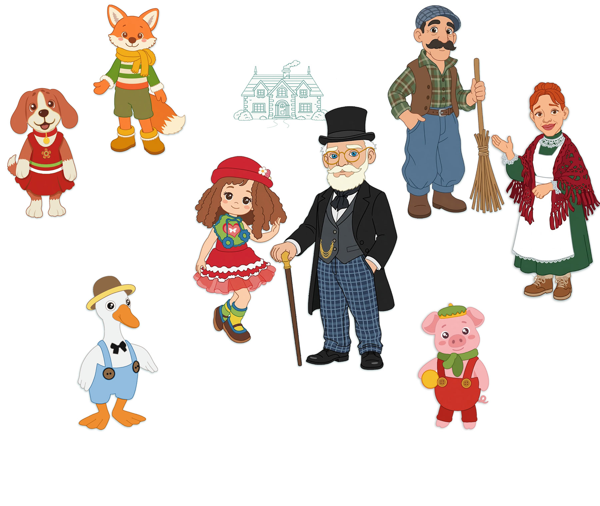

Мир усадьбы YarnTale
Настенька
любознательная и энергичная девочка. Её интересует всё на свете: люди, идеи и окружающий мир.
Настенька — яркая, любознательная и энергичная девочка, внучка Василия Вольдемаровича. Её интересует всё на свете: вопросы, люди, идеи и окружающий мир. У неё сильный характер и удивительная целеустремлённость — если Настенька чего-то хочет, она почти всегда находит способ этого добиться.
Она не боится быть активной, задавать вопросы и пробовать новое. Иногда её эмоции переполняют её, и она ещё не всегда чувствует момент, когда нужно остановиться и сделать паузу. Но именно эта эмоциональная открытость — её сила: Настенька живёт полно и искренне, не вполсилы.
Её путь — научиться слушать не только своё стремление двигаться вперёд, но и вовремя понимать, когда нужно замедлиться, задуматься и осознанно выбрать направление.
Господин Василий Вольдемарович
Мудрый и добрый. Человеко чести и благородства. Любит природу и тишину.
Господин Василий Вольдемарович
Василий Вольдемарович — статный и благородный мужчина своих «золотых лет», седовласый, со спокойным взглядом и достоинством человека, прожившего честную и непростую жизнь. Когда-то он служил офицером — добросовестно, совестливо и преданно делу. Ему нередко приходилось принимать трудные и непопулярные решения, но он всегда оставался человеком чести: долг для него был превыше всего.
Его жена давно ушла из жизни, дети выросли и разъехались, и Василий Вольдемарович стал человеком уединённым и сдержанным, но не одиноким — в нём живут мир, мудрость и тихая внутренняя сила.
Выйдя на пенсию, он решил жить ближе к земле, в гармонии с природой, которую всегда любил. Он приобрёл заброшенную усадьбу и вместе со своими верными помощниками — дядей Лёшей и тётей Полей — восстановил её. Дом был отремонтирован, двор очищен, ферма приведена в порядок, и с приходом весны усадьба снова ожила: в воздухе зазвучали кудахтанье, кваканье и весёлое хрюканье. Розовощёкие поросята визжали от радости при виде хозяина, а важный петух Артур приветствовал его громким и гордым «Ку-ка-ре-ку!».
Василий Вольдемарович относится ко всем живым существам с особым уважением. Во время прогулок он осторожно обходит даже самых маленьких насекомых на тропинке и может часами бродить по бескрайним полям и душистым лугам, наслаждаясь тишиной и красотой мира.
Чаще всего его можно встретить либо в саду — за обрезкой роз или неспешным разговором с дядей Лёшей, — либо в уютном кабинете с любимой библиотекой. Там он проводит долгие вечера, погружаясь в книги и находя в них мудрость, покой и тихую радость.
Одет он всегда аккуратно: бархатная жилетка, строгие брюки и старые карманные часы на цепочке — подарок далёкой молодости. Василий Вольдемарович — человек, который многое видел, многое понял и наконец обрёл мир там, где ему и место: среди природы, книг, птиц и честных людей.
Лисёнок Лиуми
Озорной, любознательный, милый и невероятно умный. Вдохновитель творчества и игр.
🦊 Лисёнок Лиуми — озорной, любознательный, милый и невероятно умный. Он любит бегать, играть и задавать бесконечные вопросы, а потом сидеть, нахмурившись, и задумчиво искать ответы. Лиуми — словно лучик солнца: живой, шустрый и с ясными глазками.
Он — верный друг: вместе с собакой Пиппой устраивает весёлые гонки, обсуждает сказки с крысом Мышелем и любит сидеть под пледом в кресле рядом с котом Филомуром. Хотя Лиуми ещё мал, в нём уже заметны большая доброта и удивительная мудрость.
Лиуми — вдохновитель творчества. Он изобретателен и без устали придумывает игры, сюжеты для сказок, рисунки и творческие занятия.
Собачка Пиппа
Весёлая, жизнерадостная и игривая
Пиппа добрая и дружелюбная любимица всех обитателей усадьбы.
🐶 Пиппа — собачка господина Василия Вольдемаровича, смесь бигля и дворняги. Небольшая охотничья гончая с превосходным нюхом и живым, энергичным характером. Белоснежная, с рыжими и коричневыми пятнышками и очаровательными длинными ушами, Пиппа словно воплощает верность, ум и внутреннее достоинство.
Весёлая, жизнерадостная и игривая, она встречает каждого звонким приветливым лаем, радостно виляет хвостиком и непременно старается облизать — не из невоспитанности, а от избытка нежности. Пиппа очень добрая и дружелюбная, и потому любимица всех обитателей усадьбы.
Она крепко дружит с лисёнком Лиуми, и их любимое занятие — играть в мяч. Пиппа обожает бегать с ним наперегонки по полю, а потом уютно устраивается у ног кота Филомура, чтобы слушать его неспешные сказки.
Иногда Пиппа с азартом гоняется за курами, но никогда не причиняет им вреда. Напротив, она охраняет птичий двор от незваных гостей и хищных птиц.
Ухоженная, послушная и внимательная к друзьям, Пиппа обладает особым благородством — тихим и настоящим. Её присутствие приносит в дом спокойствие и тепло.
Гусёнок Филя
Умный, любознательный и необыкновенно смелый. Он знает цену жизни и никогда не сдаётся.
Гусёнок Филя — умный, любознательный и необыкновенно смелый малыш. Его живой ум и пытливый взгляд однажды привлекли внимание грозного орла Беркутa. Хищник схватил Филю и унёс далеко от дома. Мама-гусыня отчаянно пыталась его отбить, но не смогла.
Много дней Филя провёл в высоком замке Беркутa, где тот собирался воспитать из него своего наследника. Но Филя не забыл ни маму, ни родной птичий двор. В его маленьком сердце жила память о доме — и именно она дала ему силы однажды решиться на побег.
Филя сумел вырваться на свободу и долго скитался по незнакомым местам, пока наконец не нашёл дорогу обратно — туда, где его ждала мама.
Он ещё юный, но уже знает цену жизни и никогда не сдаётся.
Поросёнок Петя
Тихий, застенчивый и мечтательный.
У него добрая, мягкая и ранимая душа. Мечтает найти настоящих друзей.
🐷 Петя — тихий, застенчивый и немного пугливый поросёнок. С самого детства он часто становился объектом насмешек: за пухленькие розовые щёчки и кругленький животик его дразнили и называли «пончиком». Петя очень переживал из-за этого и постепенно стал осторожным и недоверчивым — он не спешит открывать своё сердце и чаще играет один, потому что так ему спокойнее. Ведь он не виноват, что выглядит именно так — такова природа поросят.
Но за этой робостью скрывается удивительно добрая, мягкая и ранимая душа. У Пети есть любимый маленький мячик, с которым он играет так, будто это его самый лучший друг. Больше всего на свете Петя мечтает найти настоящих друзей — тех, кто полюбит его таким, какой он есть. Пока это получается не всегда, но он продолжает надеяться.
Его мама, свинка Марфуша, однажды решила отдать его в балетную школу. Петю туда не приняли, и это стало ещё одним ударом по его уверенности. Хотя, если честно, в глубине души он даже немного обрадовался: танцы — совсем не его. А вот играть с мячиком или копаться в песочнице — именно там он чувствует себя по-настоящему счастливым и свободным.
Дядя Лёша
Трудолюбивый, добрый и простой человек. Помощник по хозяйству. Любит землю, свежий воздух и спокойный, размеренный ход жизни.
Дядя Лёша — трудолюбивый, добрый и по-своему простой человек. Худощавый, но крепкий, загорелый от бесконечных лет под солнцем, с шершавыми руками и лицом, отмеченным ветром, работой и временем.
Он работает с утра до позднего вечера и никогда не жалуется. Любит землю, свежий воздух и спокойный, размеренный ход жизни. Может часами сидеть у пруда с удочкой — молча, спокойно, будто мир вокруг замирает. Ему достаточно шороха камышей и запаха полевых цветов.
Лёша говорит то, что думает, и делает то, что говорит. Он не терпит лжи, хитростей и ненужных игр. «Жизнь слишком коротка, чтобы плести интриги», — иногда бурчит он себе под нос.
Порывистость у него случается: вспыльчив, может ляпнуть лишнее или сказать резко. Но если понимает, что ошибся, не увиливает — встанет прямо, вздохнёт и постарается всё исправить по-честному.
Он не говорит красивыми словами — и в этом нет нужды. Его поступки прочны и надёжны, как хороший камень в старой стене. Просто. Честно. Надёжно.
Тётя Поля
Простая, честная добрая и очень трудолюбивая женщина. На её плечах держится всё хозяйство.
Тётя Поля, жена дяди Лёши — простая, честная и очень трудолюбивая женщина, жена дяди Лёши. Без хитрости и без всяких претензий, она — тихое сердце всего хозяйства. В её доме всегда чисто и уютно: Поля готовит, стирает, убирает, штопает одежду так ловко, что работа в её руках словно делается сама.
От долгих лет труда и постоянных забот тётя Поля выглядит старше своих лет. Лицо её потемнело от солнца и ветра, будто жизнь прибавила ей лишний десяток. На салоны красоты и модные магазины у неё нет ни времени, ни желания. Одевается она просто, но аккуратно: тёмно-зелёное полосатое платье, вязаный кардиган и чистый белый передник, который она стирает каждый день.
По утрам тётя Поля работает в усадебном доме Василия Вольдемаровича: готовит, убирает, стирает, следит за порядком на кухне, приносит свежие продукты с рынка. А после работы возвращается к своему маленькому огороду, где у неё растёт всё — зелень, овощи и, конечно, любимый укроп. На птичьем дворе она кормит птицу, собирает яйца, подметает — и всюду у неё порядок.
Поля добрая, матерински заботливая и простосердечная. Она довольна своей жизнью и никогда не жалуется, хотя трудится с рассвета до сумерек. По правде говоря, на её плечах держится всё хозяйство — и усадьба, и ферма.
Тётя Поля мало говорит — ей это и не нужно. Её дела говорят за неё: просто, честно и надёжно. Точно так же, как она сама.